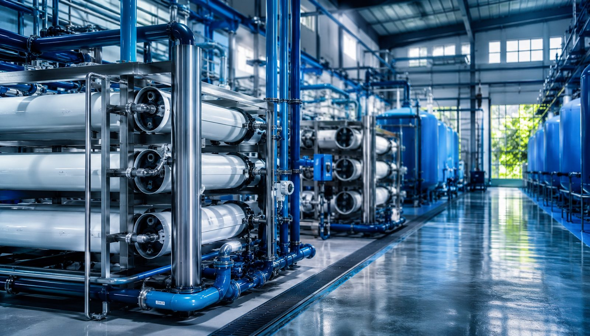
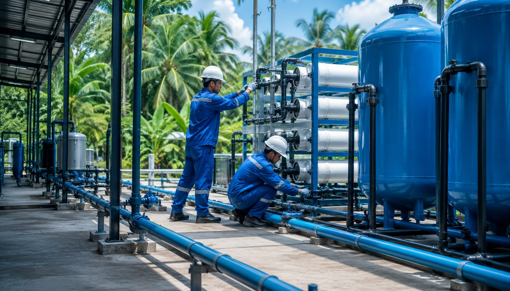
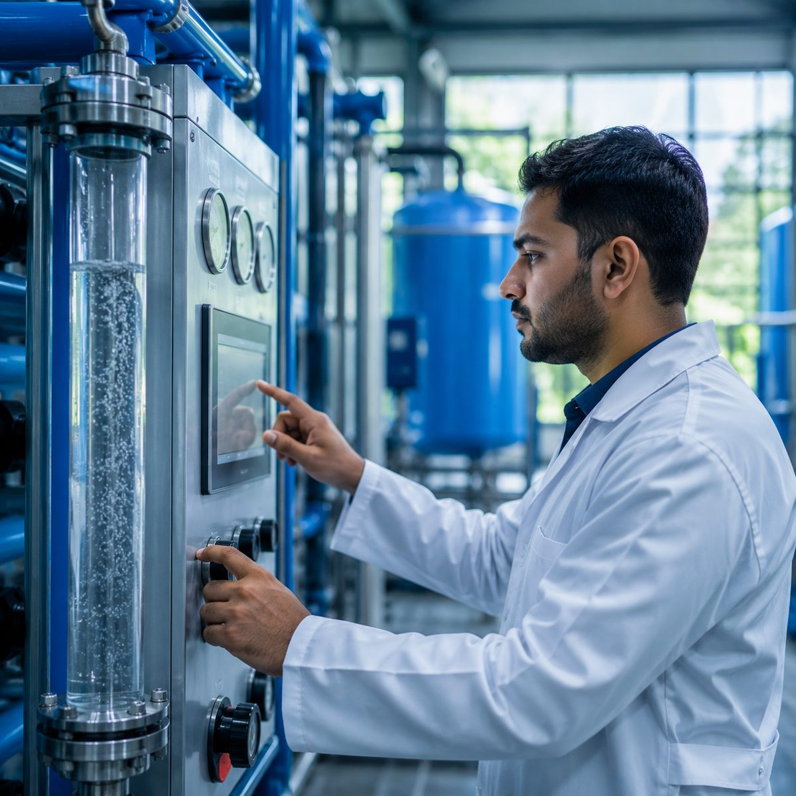
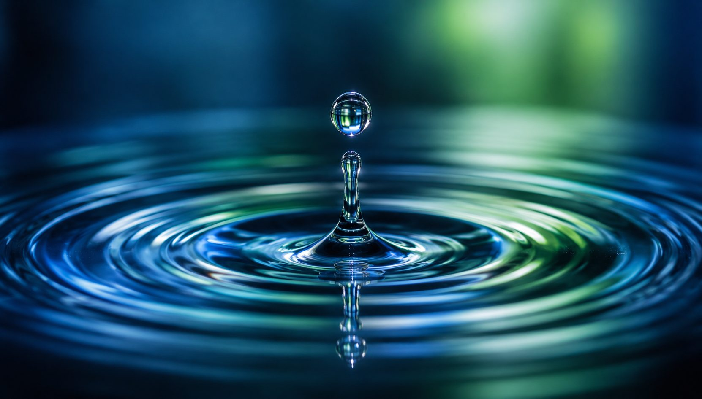

For more than three decades we have designed, installed and maintained water and wastewater systems for hotels, factories, hospitals, buildings and communities. Here is the kind of work we deliver.
A snapshot of the system types and sectors Waterman works with, all designed, supplied, installed and serviced in-house.
Multi-stage reverse osmosis for hotels and resorts, delivering safe, great-tasting water to a standard guests notice.

Compact, reuse-ready sewage treatment plants for apartment complexes and commercial buildings, treated water reused for gardens and flushing.

Physico-chemical and biological ETPs that bring factory wastewater to discharge standards, engineered for reliable compliance.

Ion-exchange softening for commercial buildings and industry, protecting pipes, boilers and appliances from hard water.
Tertiary treatment and RO polishing that recover water for irrigation, flushing and cooling, cutting bills at industrial sites.
Ongoing chemical and microbiological analysis from our in-house lab, so every system is designed and maintained on real data.
These represent the system types and sectors we work across. Detailed, named project case studies with site photography are being prepared. To discuss a project like yours, get in touch.
Every system starts with laboratory analysis of your actual water, so it is sized and specified correctly the first time.
Quality equipment from world-leading manufacturers, engineered, installed and commissioned by our own team.
Annual servicing and maintenance contracts keep your system running non-stop, year after year.
Tell us about your site and your water. Our engineers will design the right system and give you a clear, costed proposal.